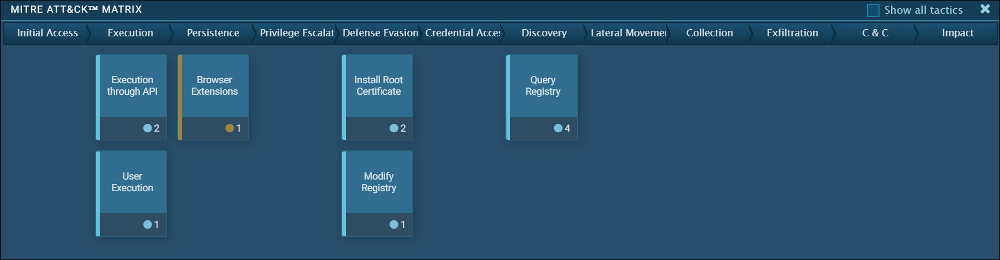

28.1.1 Informática forense digital
Ahora que se han investigado e identificado las alertas válidas, ¿qué se debe hacer con las pruebas? Inevitablemente, el analista especializado en ciberseguridad descubrirá evidencia de actividades delictivas. Con el fin de proteger la organización y para evitar la ciberdelincuencia, es necesario identificar los agentes de amenaza, informar a las autoridades competentes y brindar pruebas para respaldar la acusación. Los analistas de ciberseguridad de categoría 1 suelen ser los primeros en descubrir delitos. Deben saber cómo manejar la evidencia correctamente y atribuírsela a los agentes de amenaza.
La informática forense digital consiste en la recuperación e investigación de la información que se encuentra en dispositivos digitales en relación con actividades delictivas. Los indicadores de compromiso son la evidencia de que se ha producido un incidente de ciberseguridad. Esta información puede consistir en datos en dispositivos de almacenamiento, en la memoria volátil de la computadora, o los rastros de ciberdelincuencia que se conservan en los datos de la red, como pcaps y registros. Es esencial que se conserven todos los indicadores de compromiso para futuros análisis y atribución de ataques.
En términos generales, la ciberdelincuencia se puede caracterizar como proveniente del interior o el exterior de la organización. Las investigaciones privadas se realizan a individuos dentro de la organización. Estos individuos podrían simplemente comportarse de maneras que violan los acuerdos de usuario o manifestar otra conducta no delictiva. Cuando los individuos son sospechosos de participar en actividades delictivas que involucran el robo o la destrucción de propiedad intelectual, una organización puede optar por involucrar a las autoridades encargadas del orden público, en cuyo caso la investigación se vuelve pública. Los usuarios internos también pueden usar la red de la organización para llevar a cabo otras actividades delictivas que no están relacionadas con la misión de la organización, pero sí violan diversas leyes. En este caso, los funcionarios públicos llevarán a cabo la investigación.
Cuando un atacante externo ataca una red y roba o altera datos, es necesario recopilar evidencia para documentar el alcance del ataque. Diversos organismos reguladores especifican una serie de acciones que una organización debe adoptar cuando se ponen en riesgo distintos tipos de datos. Los resultados de la investigación forense pueden ayudar a identificar las medidas que deben tomarse.
Por ejemplo, las regulaciones de US HIPAA estipulan que, si ocurre una violación de datos que involucra información de pacientes, se debe notificar a las personas afectadas. Si la violación involucra a más de 500 personas en un estado o jurisdicción, se debe notificar también a los medios de comunicación. La investigación de informática forense digital debe utilizarse para determinar qué personas fueron afectadas y certificar la cantidad de individuos involucrados a fin de que pueda efectuarse la notificación correspondiente de acuerdo con las reglas de la HIPAA.
Es posible que la propia organización sea objeto de una investigación. Los analistas de ciberseguridad pueden encontrarse en contacto directo con evidencia forense digital que detalle la conducta de los miembros de la organización. Los analistas deben conocer los requisitos relativos a la preservación y el manejo de dicha evidencia. Si no lo hacen correctamente, esto podría ocasionar sanciones penales para la organización y hasta para el analista de ciberseguridad si se establece que hubo intención de destruir pruebas.
28.1.2 El proceso de informática forense digital
Es importante que una organización desarrolle procesos y procedimientos bien documentados para el análisis forense digital. El cumplimiento reglamentario puede exigir esta documentación y las autoridades pueden inspeccionarla en caso de una investigación pública.
NIST Special Publication 800-86 Guide to Integrating Forensic Techniques in Incident Response es un recurso valioso para las organizaciones que requieren orientación en el desarrollo de planes forenses digitales. Por ejemplo, se recomienda que la investigación forense se realice utilizando el proceso de cuatro fases.
A continuación se describen las cuatro fases básicas del proceso forense de pruebas digitales.
El proceso forense de evidencia digital

Paso 1: Recopilación
Esta es la identificación de posibles fuentes de datos forenses y la obtención, el manejo y el almacenamiento de esos datos. Esta etapa es fundamental porque se debe tener especial cuidado para no dañar, perder u omitir datos importantes.
Paso 2: Examen
Esto implica evaluar y extraer información relevante de los datos recopilados. Esto puede implicar la descompresión o el descifrado de los datos. Es posible que sea necesario eliminar información irrelevante para la investigación. La identificación de evidencia real en grandes recopilaciones de datos puede ser un proceso muy difícil y lento.
Paso 3: Análisis
Esto implica sacar conclusiones de los datos Se deben documentar las características salientes; por ejemplo: personas, lugares, horas y eventos, entre otras. Este paso puede implicar también la correlación de datos de múltiples fuentes.
Paso 4: Generación de informes
Esto implica preparar y presentar la información que resulte del análisis. La elaboración de informes debe ser imparcial y se deben ofrecer explicaciones alternativas si corresponde. Deben incluirse las limitaciones del análisis y los problemas que se enfrentaron. También deben hacerse sugerencias para profundizar la investigación y tomar medidas adicionales.
28.1.3 Verifique su conociminento - Identifique los pasos en el proceso de análisis forense digital
28.1.4 Tipos de evidencia
En los procedimientos legales y en términos generales, la evidencia se clasifica como directa o indirecta. La evidencia directa es aquella consta de la evidencia que indudablemente poseía el acusado o de afirmaciones de un testigo presencial que vio directamente el comportamiento delictivo.
Adicionalmente, la evidencia se clasifica del siguiente modo:
Mejor evidencia - Esta es la evidencia en su estado original. Esta evidencia podrían ser los dispositivos de almacenamiento utilizados por un acusado o archivos que se pueda probar que no fueron alterados.
Evidencia confirmatoria - Es la evidencia que respalda una afirmación desarrollada a partir de la mejor evidencia.
Evidencia indirecta - Es la que, combinada con otros hechos, establece una hipótesis. También se conoce como evidencia circunstancial. Por ejemplo, la existencia de pruebas que demuestren que un individuo ya cometió delitos similares puede respaldar la afirmación de que la persona cometió el delito del que se la acusa.
28.1.5 Verifique su conocimiento - Identificar el tipo de evidencia
28.1.6 Orden de recopilación de evidencia
IETF RFC 3227 proporciona pautas para la recopilación de evidencia digital. Describe un orden para la recopilación de evidencia digital según la volatilidad de los datos. Los datos almacenados en la memoria RAM son los más volátiles y se perderán cuando se apague el dispositivo. Además, podría suceder que los datos importantes en la memoria volátil se sobrescriban mediante procesos rutinarios de la máquina. Por lo tanto, la recopilación de evidencia digital debe comenzar con las pruebas más volátiles hasta llegar a las menos volátiles, como se muestra en la figura.
Prioridad de recolección de pruebas

Un ejemplo de la recolección de evidencia ordernado por la mas volátil a la menos volátil sería:
Detalles del sistema de donde se capturó la evidencia, incluyendo quién tiene acceso a ese sistema y qué nivel de permiso deberían capturar. Dichos detalles deben incluir configuraciones de hardware y software desde el sistema de donde los datos fueron obtenidos.
28.1.7 Cadena de custodia
Aunque es posible que la evidencia se haya recopilado de fuentes que respaldan la atribución del delito a un individuo acusado, puede cuestionarse la veracidad de las pruebas aduciendo que podrían haberse alterado o fabricado después de la recopilación. Para contrarrestar este argumento, debe definirse y respetarse una rigurosa cadena de custodia.
La cadena de custodia implica la recopilación, el manejo y el almacenamiento seguro de la evidencia. Deben mantenerse registros detallados de lo siguiente:
28.1.8 Integridad y preservación de los datos
Al recopilar datos, es importante que se conserven en su estado original. La marca de hora de los archivos debe conservarse. Por esto, debe copiarse la evidencia original y los análisis deben realizarse solamente en las copias del original. Esto permite evitar la pérdida o modificación accidental de las pruebas. Dado que las marcas de hora pueden formar parte de la evidencia, se debe evitar abrir archivos desde el medio original.
Deberá registrarse el proceso utilizado para crear copias de la evidencia que se utiliza en la investigación. Siempre que sea posible, las copias deben ser copias directas de nivel de bit de los volúmenes de almacenamiento originales. Debería ser posible comparar la imagen del disco archivado y la imagen del disco investigada para identificar si se ha manipulado el contenido del disco investigado. Por esta razón, es importante archivar y proteger el disco original para mantenerlo en su condición original, sin alteraciones.
La memoria volátil podría contener evidencia forense, por lo que deben utilizarse herramientas especiales para preservar dicha evidencia antes de que el dispositivo se apague y las pruebas se pierdan. Los usuarios no deben desconectar, desenchufar ni apagar máquinas infectadas, a menos que el personal de seguridad lo indique explícitamente.
El seguimiento de estos procesos garantizará que se conserven todas las pruebas de conducta ilícita y que se puedan identificar indicadores de avenencia.
28.1.9 Atribución de ataques
28.1.9 Atribución de ataques
Después de que se ha evaluado el nivel del ciberataque y se ha recopilado y preservado la evidencia, el equipo de respuesta ante los incidentes puede comenzar a identificar el origen del ataque. Como sabemos, existe una amplia variedad de actores de amenazas, que abarca desde individuos descontentos y hackers, hasta ciberdelincuentes y bandas criminales o incluso naciones. Algunos delincuentes actúan desde el interior de la red, mientras que otros pueden estar del otro lado del mundo. La sofisticación de la ciberdelincuencia también varía. Las naciones pueden emplear a grandes grupos de individuos altamente capacitados para llevar a cabo un ataque y ocultar sus rastros, mientras que otros agentes de amenaza pueden elegir presumir abiertamente de sus actividades delictivas.
La atribución de una amenaza hace referencia a la acción de determinar a la persona, organización o nación responsable de una intrusión o ataque exitosos.
La identificación de los actores responsables de una amenaza debe darse por medio de la investigación sistemática y fundamentada de la evidencia. Mientras que puede resultar útil especular también sobre la identidad de los agentes de amenaza identificando posibles motivaciones para un incidente, es importante no dejar que esto desvíe la investigación. Por ejemplo, atribuir un ataque a un competidor comercial puede desviar la investigación de la posibilidad de que una banda criminal o una nación sean los responsables.
En las investigaciones con base en evidencias, el equipo de respuesta ante los incidentes correlaciona las tácticas, las técnicas y los procedimientos (TTP, Tactics, Techniques and Procedures) empleados en el incidente con los de otros ataques conocidos. Los ciberdelincuentes, al igual que muchos otros delincuentes, tienen características específicas que se repiten en la mayoría de sus delitos. Las fuentes de inteligencia de amenazas pueden ayudar a relacionar las TTP identificadas por una investigación con fuentes conocidas de ataques similares. Sin embargo, esto pone de relieve un problema con la atribución de la amenaza. Es muy improbable que la evidencia de ciberdelincuencia sea directa. Identificar similitudes entre las TTP de agentes de amenazas conocidos y desconocidos es evidencia circunstancial.
Algunos aspectos de una amenaza que pueden ayudar a la atribución son la ubicación de los hosts o dominios originarios, las características del código utilizado en malware, las herramientas utilizadas y otras técnicas. A veces, en el ámbito de la seguridad nacional, no es posible atribuir abiertamente las amenazas porque esto dejaría al descubierto métodos y capacidades que necesitan protección.
Para las amenazas internas, la administración de activos desempeña un papel fundamental. Descubrir los dispositivos desde donde se inició un ataque puede llevar directamente al agente de amenaza. Las direcciones IP, las direcciones MAC y los registros de DHCP pueden ayudar a rastrear las direcciones usadas en el ataque hasta llegar a un dispositivo específico. Los registros de AAA son muy útiles en este sentido, ya que detallan quién tuvo acceso a los recursos de red, en qué momento lo hizo y qué recursos eran.
28.1.10 El marco MITRE ATT&CK
Una forma de atribuir un ataque es modelar el comportamiento del actor de amenazas. El marco de tácticas adversariales, técnicas y conocimiento común (ATT&CK) de MITRE permite detectar tácticas, técnicas y procedimientos del atacante como parte de la defensa de amenazas y la atribución de ataques. Esto se hace mapeando los pasos de un ataque a una matriz de tácticas generalizadas y describiendo las técnicas que se utilizan en cada táctica. Las tácticas consisten en los objetivos técnicos que un atacante debe lograr para ejecutar un ataque y las técnicas son los medios por los que se realizan las tácticas. Por último, los procedimientos son las acciones específicas tomadas por los actores amenazadores en las técnicas identificadas. Los procedimientos son el uso documentado de técnicas en el mundo real por parte de los actores amenazadores.
El marco MITRE ATT&CK es una base de conocimiento global sobre el comportamiento de los actores de amenazas. Se basa en la observación y el análisis de hazañas del mundo real con el propósito de describir el comportamiento del atacante, no el ataque en sí. Está diseñado para permitir el intercambio automatizado de información mediante la definición de estructuras de datos para el intercambio de información entre su comunidad de usuarios y MITRE.
La figura muestra un análisis de una explotación de ransomware de la excelente caja de arena en línea ANY.RUN. Las columnas muestran las tácticas de matriz de ataque empresarial, con las técnicas que utiliza el malware dispuestas debajo de las columnas. Al hacer clic en la técnica, se enumeran los detalles de los procedimientos que utiliza la instancia específica de malware con una definición, explicación y ejemplos de la técnica.
Nota: Haga una búsqueda en Internet en MITRE ATT&CK para obtener más información sobre la herramienta.
Matriz MITRE ATT&CK para una explotación de ransomware
